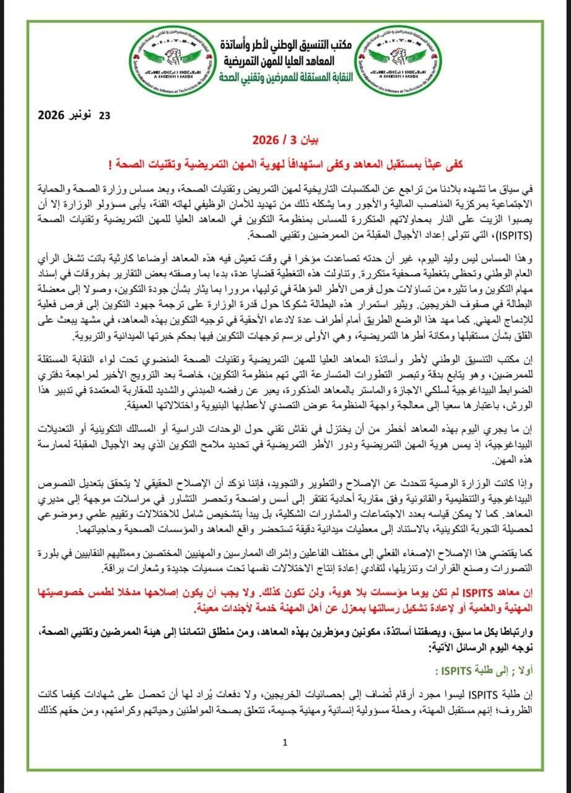

مكتب التنسيق الوطني لأطر وأساتذة المعاهد العليا يدق ناقوس الخطر: «كفى عبثاً بمستقبل المعاهد وكفى استهدافاً لهوية المهن التمريضية!»

أصدر مكتب التنسيق الوطني لأطر وأساتذة المعاهد العليا للمهن التمريضية وتقنيات الصحة، المنضوي تحت لواء النقابة المستقلة للممرضين وتقنيي الصحة، بيانه رقم 3/2026 بتاريخ 23 نونبر 2026، تحت عنوان: «كفى عبثاً بمستقبل المعاهد وكفى استهدافاً لهوية المهن التمريضية وتقنيات الصحة!»، يدق فيه ناقوس الخطر حول ما يُحاك ضد الهوية التمريضية لهذه المعاهد.
نريد إصلاحاً حقيقياً، علمياً، تشاركياً، ومنصفاً، لا إصلاحاً شكلياً يُشرعن الإقصاء ويُهدد مستقبل التكوين. فمعاهد ISPITS ليست ساحة لتجريب السياسات، بل مؤسسات لها هوية ورسالة ومستقبل يستحق الدفاع عنه.
• سياق مقلق: يأتي البيان في ظل تراجع عن المكتسبات التاريخية لمهن التمريض وتقنيات الصحة، ومساس بمركزية المناصب المالية والأجور، لتضاف إليه محاولات متكررة للمساس بمنظومة التكوين في المعاهد العليا التي تتولى إعداد الأجيال المقبلة من الممرضين وتقنيي الصحة. ويشير البيان إلى أوضاع كارثية باتت تشغل الرأي العام، من خروقات في إسناد مهام التكوين، وتساؤلات حول فرص الأطر المؤهلة في توليها، وجودة التكوين، وصولاً إلى معضلة البطالة في صفوف الخريجين.
• رفض مقاربة أحادية: يعبر المكتب عن رفضه المبدئي والشديد للمقاربة المعتمدة في تدبير ورش مراجعة دفتري الضوابط البيداغوجية لسلكي الإجازة والماستر، معتبراً أن ما يجري أخطر من نقاش تقني حول الوحدات والمسالك، لأنه يمس هوية المهن التمريضية ودور الأطر التمريضية في تحديد ملامح التكوين. فالإصلاح الحقيقي لا يتحقق بتعديل النصوص وفق مقاربة أحادية، ولا يُقاس بعدد الاجتماعات والمشاورات الشكلية، بل يبدأ بتشخيص شامل وتقييم علمي وموضوعي، وبإشراك فعلي للممارسين والمهنيين المختصين وممثليهم النقابيين.
«إن معاهد ISPITS لم تكن يوماً مؤسسات بلا هوية، ولن تكون كذلك، ولا يجب أن يكون إصلاحها مدخلاً لطمس خصوصيتها المهنية والعلمية.»
ووجه البيان رسائل إلى ثلاث جهات:
• إلى طلبة ISPITS: إنكم لستم مجرد أرقام تُضاف إلى إحصائيات الخريجين، بل مستقبل المهنة، ومن حقكم تكوين رصين ومتوازن يرتكز على المعرفة العلمية والممارسة السريرية والتدريب الميداني الحقيقي. والتوسع في أعداد الطلبة يقتضي توفير شروط التكوين الجيد وربطه بحاجات المؤسسات الصحية وفرص الإدماج. ودعا البيان الطلبة إلى اليقظة، والاطلاع على القرارات التي تمس تكوينهم، وتوحيد صوتهم لانتزاع حقوقهم بالوسائل المشروعة.
• إلى الممرضين وتقنيي الصحة المزاولين: إن تجويد التكوين لا ينفصل عن واقع الممارسين الذين يستقبلون الخريجين ويؤطرونهم رغم الخصاص وتراكم الأعباء وضعف الاعتراف، ولا عن واقع الأستاذ المكوّن الذي يشتغل في ظل فراغ قانوني. ودعاهم إلى توحيد الجهود دفاعاً عن شروط الممارسة والتكوين معاً، مع التمسك بمركزية المناصب المالية مدخلاً لتوزيع منصف للأطر.
• إلى وزارة الصحة والحماية الاجتماعية: طالب البيان بإعطاء الأولوية لمراجعة مرسوم إحداث المعاهد العليا وتنظيمها وأنظمتها الداخلية، وإقرار نظام أساسي خاص بالأساتذة والمكونين المنتمين إلى هيئة الممرضين وتقنيي الصحة، واستكمال تنزيل نظام الإجازة والماستر والدكتوراه مع التمسك بمجانية التكوين العمومي في جميع أسلاكه. كما شدد على أن صون الهوية التمريضية يبدأ من معايير إسناد التكوين: «فكيف يستقيم أن يُعهد إلى الممرض بتأطير الطالب عند سرير المريض، ثم تُهمَّش خبرته عند إسناد تدريس الممارسة نفسها داخل المعهد؟». فالمكتب لا يرفض تعدد التخصصات، بل يرفض أن يتحول هذا التعدد إلى «حصان طروادة» لاختراق الهوية التمريضية للمعاهد، وأن تصبح الدكتوراه وحدها جواز عبور لتدريس مهنة لها علومها ومهاراتها وأخلاقياتها وتراكمها السريري.
مطالب مكتب التنسيق الوطني: 1. رفض المقاربة الشكلية والجزئية في مراجعة دفتر الضوابط البيداغوجية، والمطالبة بتقييم علمي وميداني شامل لحصيلة التكوين قبل اعتماد أي إصلاح. 2. إعطاء الأولوية لمراجعة مرسوم إحداث المعاهد وتنظيمها وأنظمتها الداخلية، وإقرار نظام أساسي خاص بالأساتذة والمكونين. 3. إشراك الممرضين وتقنيي الصحة المزاولين، والأساتذة والمكونين، والمؤطرين، والطلبة، وممثلي الهيئات النقابية والمهنية في جميع مراحل الإصلاح. 4. التمسك بالهوية المهنية والعلمية للمعاهد، ورفض تهميش الأطر التمريضية المؤهلة، وإعطاؤها الأولوية في تدريس العلوم التمريضية وتأطير الممارسة السريرية. 5. إقرار معايير علمية ومهنية شفافة لإسناد مهام التدريس والتأطير والبحث، والكشف عن أسس تعيين الأطر وإدماجها بالمعاهد. 6. حق الطلبة في تكوين جيد وفرص متكافئة، ورفض الزيادة في أعداد المقبولين دون توفير المؤطرين والتجهيزات وميادين التدريب الكافية. 7. ربط إصلاح التكوين بتحسين ظروف الممارسة ومعالجة الخصاص، والتمسك بمركزية المناصب المالية، وربط أعداد المقبولين بفرص إدماج الخريجين. 8. استكمال نظام الإجازة والماستر والدكتوراه والتعجيل بإحداث سلك الدكتوراه بالمعاهد، مع ضمان مجانية التكوين وإعطاء الأولوية للممرضين وتقنيي الصحة في الولوج إليه.
وختم المكتب بيانه بالتأكيد على أن النقابة أعدت بطاقات تقنية ومقترحات تفصيلية تغطي جميع محاور ملفها المطلبي، وأنها مستعدة لمناقشتها والدفاع عنها في حوار مؤسساتي جاد مع الوزارة الوصية.
«وعاشت القضية التمريضية حرة، يتحد في الدفاع عنها الطلبة والخريجون والمزاولون.»
النص الكامل للبيان متاح في مكتبة «البلاغات والبيانات».
فتح في تطبيق النقابة